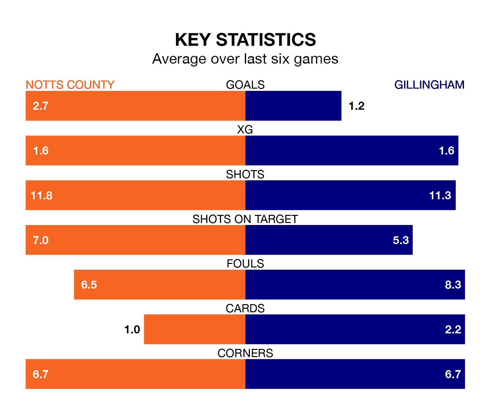

Gillingham travel to Notts County on late Friday in EFL League Two.
The visitors come into the game on the back of a draw in their last match, having tied with Walsall 1-1 at home, with a goal from Conor Masterson.
County, meanwhile, lost their last match, 1-0 against Mansfield Town.
With 61 goals in 29 games so far this season, County are the league's second-highest scorers with 2.1 goals per game. But they are conceding more than average too, letting in 54 goals at a rate of 1.9 per game.
Gillingham, meanwhile, are below average scorers, with 0.9 goals per game, compared to a league average of 1.5. They have conceded 1.2 goals per game.
In Macaulay Langstaff, the home side have the league's sharpest shooter so far this season. He has notched 20 goals in 29 appearances.
The Gills's top scorers, with four goals each, are Macauley Bonne, Connor Mahoney, Masterson and Scott Malone.
County are seventh in the table after 29 games, of which they have won 13 and drawn five, earning 44 points.
The visitors are three places behind County in 10th, with 13 wins and four draws putting them on 43 points.
The hosts are in mixed form in EFL League Two, with two wins and two draws from their last six games.
With three wins and two draws over that period, Gillingham's form is better – they have taken 11 points from 18, compared to County's eight.
Updated: 13:52 (UTC), 05/02/24